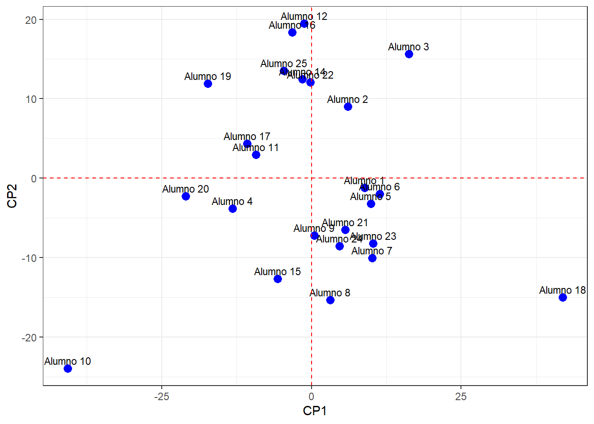
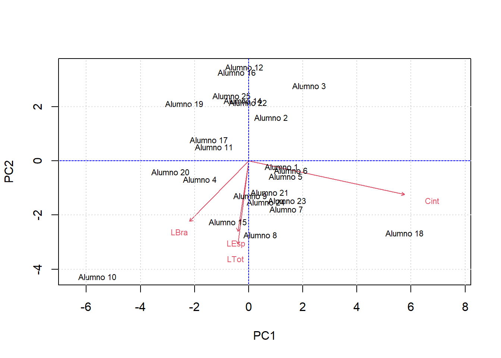

El presente taller tiene como objetivo, realizar un entrenamiento básico sobre algebra lineal aplicada a datos multivariados. Iniciarémos con operaciones básicas (taller 2.2) y posteriormente se realizarán algunas aplicaciones estadísticas como el análisis de componentes principales (pca - taller 2.2a) y el análisis discriminante (lda - taller 2.2b).
Talleres a realizar en clase
Son tres los talleres a realizar:
Taller 2.2 Operaciones matriciales básicas. El objetivo de esta actividad es adquirir destrezas en operaciones básicas con matrices que sirven de soporte para diferentes diseños multivariados.
Taller 2.2a. Operaciones matriciales para análisis de componentes principales - pca. Se aplicarán operaciones matriciales, mediante un procedimiento paso a paso, para la realización de esta técnica de ordenación multivariada - pca.
Taller 2.2b. Operaciones matriciales para el análisis discriminante lineal - lda. Se aplicarán operaciones matriciales, mediante un procedimiento paso a paso, para la realización de esta técnica de clasificación multivariada - lda.
Archivos requeridos. Descargar las plantillas o complementos para los diferentes talleres en Quarto de RStudio. Todos deben ubicarse en un directorio o carpeta titulado “Taller 2.2 Matrices en RStudio”
Plantilla del taller 2.2 en quarto: Estructura de RStudio para realizar el taller de algebra general en RStudio. Nombre del archivo: “taller2.2.matrices.Rmd”.
Plantilla del taller 2.2a en quarto: Estructura de RStudio para realizar el taller de análisis de componentes principales (pca) en RStudio. Nombre del archivo: “taller.2.2a.pca.qmd”.
Plantilla del taller 2.2b en quarto: Estructura de RStudio para realizar el taller de análisis discrimiante lineal (lda) en RStudio. Nombre del archivo: “taller.2.2b.lda.qmd”.
Formato base del YML: Estructura del encabezado de los talleres en RStudio. *Hacer clic derecho en el enlace y guardarlo en el directorio de trabajo.
Formato para justificar el texto: Complemento para justificar los documentos. *Hacer clic derecho en el enlace y guardarlo en el directorio de trabajo.
Bases de datos csv y xlsx. La siguente base de datos corresponde a cuatro variables morfométricas tomadas a estudiantes de la asignatura en semestres anteriores, está en formato plano o csv (descargar: datos1.csv) y en formato general de excel (descargar: datos1.xlsx).
Diapositivas en vivo. Son diapositivas de apoyo que solo pueden ser usadas durante el horario de clase, ya que es el docente quien puede irlas presentando. Permiten agilizar el procedimiento de cargar los comandos en RStudio.
Enlace a las diapositivas en vivo del taller 2.2a Corresponde a operaciones matriciales básicas y a su aplicación con un análisis de componentes principales (pca), cuyo objetivo es la visualización de gradientes u ordenación de datos en planos cartesianos.
Enlace a las diapositivas en vivo del taller 2.2b Corresponde a la aplicación de matrices con un análisis discrimiante lineal (lda), cuyo objetivo es la generación de funciones lineales que evalúen la calidad de la clasificación de observaciones en grupos previamente asignados (ej. individuos por tipo de sexos).
Material complementario. Revisar los siguientes enlaces complementarios:
Se calculará la determinante de dos matrices cuadradas
#-------------# Ejercicio 2# A (2,3,3,2)# B (1,4,2,5,0,3)# Cacular: Determinante de A y de B#R./A =matrix (c(2,3,3,2),2,2,byrow = T)B =matrix (c(1,4,2,5,0,3),3,3,byrow = T)A
[,1] [,2]
[1,] 2 3
[2,] 3 2
B
[,1] [,2] [,3]
[1,] 1 4 2
[2,] 5 0 3
[3,] 1 4 2
# Determinantesdet(A)
[1] -5
det(B)
[1] 0
3. Matriz inversa
Cálculo de una matriz inversa (A)-1
#------------# Ejercicio 3# A (5,2,2,2)# Calcular inversa de A# R./A =matrix(c(5,2,2,2),2,2,byrow=T)A
[,1] [,2]
[1,] 5 2
[2,] 2 2
# Matriz inversa (solve)round(solve(A),2)
[,1] [,2]
[1,] 0.33 -0.33
[2,] -0.33 0.83
4. Matriz de varianza - covarianza
Calcular la covaianza para dos matrices rectangulares
A =matrix(c(2,2,4,3,6,9),3,2, byrow= T)B =matrix(c(2:10), 5,2, byrow=T)A
round(cov.g.i,2) # round corresponde al redondeo de decimales
[,1] [,2]
[1,] 0.15 -0.05
[2,] -0.05 0.11
5. Valores y Vectores própios
Valores propios, se relacionan a la varianza explicada y los vectores própios al peso, la carga o relación de las variables con los ejes construidos en algunas técnicas como el pca.
# Calcular los valores y vectores própios de matriz de varianza-covarianza de AA =matrix(c(2,2,4,3,6,9),3,2, byrow= T)A
[,1] [,2]
[1,] 2 2
[2,] 4 3
[3,] 6 9
# Matriz de covarianza de Acov.A =var(A)cov.A
[,1] [,2]
[1,] 4 7.00000
[2,] 7 14.33333
# Valores y vectores propios (autovalores - λ y auvectores - µ)## |A*λ*I| = 0# A*µ = λ*µvv.cov.A =eigen(cov.A)vv.cov.A
# Autovectores µ de la primera filavec.f1.cov.A = vec.cov.A[1,]vec.f1.cov.A
[1] 0.4506372 -0.8927072
Taller 2.2a Aplicaciones de matrices (Análisis de Componentes Principales - PCA)
1. Librerías requeridas
# Librerías o paquetes requeridoslibrary(ggplot2) # Componente gráficolibrary(vegan) # Para el pca de forma automatizadalibrary(kableExtra) # Para la edición de las tablas
2. Cargar base de datos (datos1.csv)
# 2.2 Cargar la base de datos de Excel *.csvdatos=read.csv2("datos1.csv",row.names=1) datos[13,] # Falta un dato al estudiante 13
Sexo Longitud.total Cintura Longitud.espalda Long.brazo
Alumno 13 F 150 85.5 45 NA
datos=na.omit(datos) # na.omit, para eliminar al estudiante 13colnames(datos) <-c("Sexo","LTot","Cint","LEsp","LBra") # Rótulos de la base de datos# Formato de tablas con el paquete kableExtra (head muestra solo 6 filas de la tabla)head(datos) %>%kbl(booktabs = F) %>%kable_classic(full_width=F, html_font ="Cambria")
Sexo
LTot
Cint
LEsp
LBra
Alumno 1
F
170
85
43
57
Alumno 2
F
160
80
41
54
Alumno 3
F
156
88
35
48
Alumno 4
F
173
63
53
59
Alumno 5
M
170
86
47
56
Alumno 6
M
165
89
45
61
3. Cálculo de la matriz centrada de las variables morfométricas
#---------------variables = datos[,c(2:5)] # Variables morfométricaspromedio =colMeans(variables) # Promedios de las variablespromedio
m.centrada <-t(t(variables) - promedio) # Restar cada dato a los promedios# Encabezado de la matriz centrada con las seis primeras filashead(round(m.centrada,2)) %>%kbl(booktabs = F) %>%kable_classic(full_width=F, html_font ="Cambria")
LTot
Cint
LEsp
LBra
Alumno 1
3.33
8.17
-2.38
-3.79
Alumno 2
-6.67
3.17
-4.38
-6.79
Alumno 3
-10.67
11.17
-10.38
-12.79
Alumno 4
6.33
-13.83
7.62
-1.79
Alumno 5
3.33
9.17
1.62
-4.79
Alumno 6
-1.67
12.17
-0.38
0.21
4. Valores y Vectores própios de la Matriz de covarianzas centradas
# 1. Cálculo de valores y vectores propiosround(head(m.centrada),2)
# pca = matriz rotada (m.rotada)m.rotada = m.centrada %*% vec.propioscolnames(m.rotada) =c("CP1", "CP2", "CP3", "CP4")# Encabezado de la matriz centrada con las seis primeras filashead(round(m.rotada,2)) %>%kbl(booktabs = F) %>%kable_classic(full_width=F, html_font ="Cambria")
CP1
CP2
CP3
CP4
Alumno 1
8.88
-1.20
0.54
4.16
Alumno 2
6.06
9.04
0.75
-0.86
Alumno 3
16.28
15.62
-0.52
0.81
Alumno 4
-13.16
-3.81
10.22
0.85
Alumno 5
9.90
-3.18
3.14
1.65
Alumno 6
11.39
-1.98
-3.74
-1.83
5. Figuras de la matriz proyectada “m.Rotada”
# Figura sin editarplot(m.rotada) # m.Rotada es la matriz rotada
# Figura editada plot(m.rotada, asp=2, pch=19, xlab="CP1", ylab="CP2") # Rótulos de los ejestext(m.rotada, labels =row.names(datos),pos=3, cex=0.7) # cex() relaciona el tamaño del textoabline(h=0, col="red", lty=2) # abline (h=0) línea horizontal del plano cartesianoabline(v=0, col="red", lty=2) # abline (v=0) línea vertical del plano cartesianogrid() # Grilla en la figura
# Opción gráfica en ggplotggplot(m.rotada, aes(x = CP1, y = CP2, label =rownames(m.rotada))) +geom_point(size =3, col ="blue") +# Puntos en el gráficogeom_text(aes(label =rownames(m.rotada)), vjust =-0.5, size =3) +# Etiquetas con posición ajustadageom_hline(yintercept=0,color="red",linetype ="dashed") +# Línea horizontalgeom_vline(xintercept=0,color="red",linetype ="dashed") +# Línea verticallabs(x ="CP1", y ="CP2") +# Rótulos de los ejesfacet_grid() +# Agregar una grillatheme_bw() # Formato de la figura

6. Comparar con el Análisis de Componentes Principales - pca
# Datos del procedimiento 2.1) Sumas y norma de los vectoreshead(datos[,2:5]) # Variables y observaciones (estudiantes)
pca <-rda(datos[,2:5]) # Realización del pcabiplot(pca) # Figura del pcaabline(h=0, col="blue") # abline (h=0) línea horizontal del plano cartesianoabline(v=0, col="blue") # abline (v=0) línea vertical del plano cartesianogrid()

Taller 2.2b Aplicaciones de matrices (Análisis discriminante lineal - LDA)
1. Cargar las librerías o paquetes de R
# Librerías o paquetes requeridos library(ggplot2) # Componente gráfico library(vegan) # Para el pca de forma automatizada library(kableExtra) # Para la edición de las tablas
2. Cargar base de datos (datos1.csv)
# Cargar la base de datos de Excel *.csvdatos2 =read.csv2("datos1.csv",row.names=1) head(datos2) # Falta un dato al estudiante 13
Sexo Longitud.total Cintura Longitud.espalda Long.brazo
Alumno 1 F 170 85 43 57
Alumno 2 F 160 80 41 54
Alumno 3 F 156 88 35 48
Alumno 4 F 173 63 53 59
Alumno 5 M 170 86 47 56
Alumno 6 M 165 89 45 61
datos2 =na.omit(datos2) # Eliminar estudiantes con datos faltantes (estud. 13)colnames(datos2) =c("Sexo", "LTot", "Cint", "LEsp", "LBra") # Abreviaturas de las variableshead(datos2) # Muestra las primeras seis filas de la base de datos (datos2)
Sexo LTot Cint LEsp LBra
Alumno 1 F 170 85 43 57
Alumno 2 F 160 80 41 54
Alumno 3 F 156 88 35 48
Alumno 4 F 173 63 53 59
Alumno 5 M 170 86 47 56
Alumno 6 M 165 89 45 61
3. Matrices por cada sexo
# Matriz de variables para los hombreshombres = datos2[datos2$Sexo =="M",]head(hombres)
Sexo LTot Cint LEsp LBra
Alumno 5 M 170 86 47 56
Alumno 6 M 165 89 45 61
Alumno 7 M 170 88 56 59
Alumno 8 M 181 80 60 55
Alumno 9 M 175 76 55 54
Alumno 10 M 186 45 60 86
mujeres = datos2[datos2$Sexo =="F",]head(mujeres)
Sexo LTot Cint LEsp LBra
Alumno 1 F 170 85 43 57
Alumno 2 F 160 80 41 54
Alumno 3 F 156 88 35 48
Alumno 4 F 173 63 53 59
Alumno 11 F 168 65 49 55
Alumno 12 F 155 70 36 50
Opción en Tidyverse
library(tidyverse)# Matriz de hombres (hombres)hombres = datos2 %>%filter(Sexo =="M")head(hombres)
Sexo LTot Cint LEsp LBra
Alumno 5 M 170 86 47 56
Alumno 6 M 165 89 45 61
Alumno 7 M 170 88 56 59
Alumno 8 M 181 80 60 55
Alumno 9 M 175 76 55 54
Alumno 10 M 186 45 60 86
# Matriz de mujeres (mujeres)mujeres = datos2 %>%filter(Sexo =="F")head(mujeres)
Sexo LTot Cint LEsp LBra
Alumno 1 F 170 85 43 57
Alumno 2 F 160 80 41 54
Alumno 3 F 156 88 35 48
Alumno 4 F 173 63 53 59
Alumno 11 F 168 65 49 55
Alumno 12 F 155 70 36 50
4. Vectores de medias para hombres y muejeres (M1 y M2)
# Comando colMeans para el cálculo de los vectores de mediapromedio.h =colMeans(hombres[,c(2:5)])promedio.h
7.4 Base de datos con grupos iniciales y los discriminados
grupo.i <-c(rep(LETTERS[6],each=4),rep(LETTERS[13],each=6)) # Grupos iniciales u originalesgrupo.i
[1] "F" "F" "F" "F" "M" "M" "M" "M" "M" "M"
grupo.d <-c(rep(LETTERS[6],each=3),rep(LETTERS[13],each=7)) # Grupos discriminados con el modelo linealgrupo.d
[1] "F" "F" "F" "M" "M" "M" "M" "M" "M" "M"
datos.d =data.frame(lda=round(da,2), grupo.i, grupo.d) # Dataframe con el comparativo de los grupos y de los valores discriminados# Encabezado de la matriz centrada con las seis primeras filasdatos.d %>%kbl(booktabs = F) %>%kable_classic(full_width=F, html_font ="Cambria")
lda
grupo.i
grupo.d
W1
-0.13
F
F
W2
-3.27
F
F
W3
-5.28
F
F
W4
0.64
F
M
W5
1.61
M
M
W6
1.11
M
M
W7
5.90
M
M
W8
7.15
M
M
W9
3.59
M
M
W10
4.05
M
M
8. Análisis de contingencia
Validación cruzada que compara los aciertos de la clasificación inicial de los estudiantes en sus sexos, con la clasificación del lda. Como solo un estudiante femenino clasificó en el grupo masculino, el porcentaje de acierto fue del 90%, para los 10 estudiantes discriminados.
# Crear tabla de contingenciatabla_contingencia =table(grupo.d,grupo.i)tabla_contingencia
# Total de estudiantestotal =sum(tabla_contingencia)total
[1] 10
# Porcentaje de aciertosaciertos2 = (aciertos/total)*100aciertos2
[1] 90
LDA con tidyverse
Se realizará el ejercicio anterios pero con algunos comandos de tidyverse los cuales permiten automatizar de una forma más intuitiva al proceso matricial para el análisis discriminante lineal - lda, de los estudiantes.
1. Librerías requeridas
# Librerías para los cálculos y las figuraslibrary(MASS)library(lattice)library(tidyverse)library(kableExtra)library(gridExtra) # Para figuras estadísticas (varios factores)library(grid) # Para figuras estadísticas (varios factores)
2. Lectura de la base de datos.
Para este caso se utilizará la versión ajustada de datos2, del ejercicio anterior.
# Lectura de la base de datoshead(datos2)
Sexo LTot Cint LEsp LBra
Alumno 1 F 170 85 43 57
Alumno 2 F 160 80 41 54
Alumno 3 F 156 88 35 48
Alumno 4 F 173 63 53 59
Alumno 5 M 170 86 47 56
Alumno 6 M 165 89 45 61
3. Vectores de medias
# Agrupar por sexos y calculo de mediasmedias = datos2 %>%group_by(Sexo) %>%summarise(across(1:4,mean))medias
# A tibble: 2 × 5
Sexo LTot Cint LEsp LBra
<fct> <dbl> <dbl> <dbl> <dbl>
1 F 162. 72.1 40.6 59.6
2 M 173. 83.4 52 62.5
4. Vectores de diferencias y sumas de medias
La diferencia para este caso, es que se transpone el vector de diferencias y el de suma de medias.
# Vector de diferencia de medias (dif)dif =as.matrix(medias[medias$Sexo =="M", -1]) -as.matrix(medias[medias$Sexo =="F", -1])dif =t(dif) # Vector de diferencia de me medias transpuestosum =as.matrix(medias[medias$Sexo =="M", -1]) +as.matrix(medias[medias$Sexo =="F", -1])sum =t(sum) # vector suma de medias transpuesto
5. Matriz por cada sexo
# Matriz de hombres (hombres)hombres = datos2 %>%filter(Sexo =="M")head(hombres)
Sexo LTot Cint LEsp LBra
Alumno 5 M 170 86 47 56
Alumno 6 M 165 89 45 61
Alumno 7 M 170 88 56 59
Alumno 8 M 181 80 60 55
Alumno 9 M 175 76 55 54
Alumno 10 M 186 45 60 86
# Matriz de mujeres (mujeres)mujeres = datos2 %>%filter(Sexo =="F")head(mujeres)
Sexo LTot Cint LEsp LBra
Alumno 1 F 170 85 43 57
Alumno 2 F 160 80 41 54
Alumno 3 F 156 88 35 48
Alumno 4 F 173 63 53 59
Alumno 11 F 168 65 49 55
Alumno 12 F 155 70 36 50
6. Matriz de varianza-covarianza generalizada e invertida S-1
# Filtrar los datos por sexohombres <- datos2 %>%filter(Sexo =="M")mujeres <- datos2 %>%filter(Sexo =="F")# Covarianza de hombres (cov.h)cov.h <- hombres[,2:5] %>%cov()# Covarianza de mujeres (cov.m)cov.m <- mujeres[,2:5] %>%cov()# Convertir la columna Sexo en factordatos2 <- datos2 %>%mutate(Sexo =as.factor(Sexo))# Tamaño de la muestra (número de estudiantes por sexo)n.h <-nrow(hombres)n.m <-nrow(mujeres)# Matriz de varianza-covarianza generalizadacov.g <- (n.h * cov.h + n.m * cov.m) / (n.h + n.m)cov.g.i <-solve(cov.g)round(cov.g.i, 3)
La siguiente función, permite ahorrar varios pasos, porque discrimina a todos los estudiantes (observaciones o filas de la base de datos), haya los vectores y la función discriminante de cada estudiante y realiza las tabla que compara a la clasificación inicial por sexos vs. la clasificación del modelo del discriminante lineal - lda. Esta función resume a todo el paso 7 del ejercicio anterior.
# Función discriminante para todos los estudianteslda <- datos2[,2:5] %>%as.matrix() %>%apply(1, function(x) { x <-as.matrix(x) # Convertir x a un vector columna (4x1) W <- (t(dif) %*% cov.g.i %*% x) - (1/2*t(dif) %*% cov.g.i %*% sum)return(W) }) %>%tibble(Alumnos =rownames(datos2), resultados_W = .) %>%# Redondear a 2 decimalesmutate(Sexo_discriminado =ifelse(resultados_W <0, "F", "M"), # DiscriminanteSexo_original = datos2$Sexo) # Añadir columna con el sexo original# Encabezado de la matriz centrada con las seis primeras filashead(lda) %>%kbl(booktabs = F) %>%kable_classic(full_width=F, html_font ="Cambria")
Alumnos
resultados_W
Sexo_discriminado
Sexo_original
Alumno 1
-0.1271618
F
F
Alumno 2
-3.2658277
F
F
Alumno 3
-5.2816257
F
F
Alumno 4
0.6418749
M
F
Alumno 5
1.6137960
M
M
Alumno 6
1.1092793
M
M
8. Análisis de contingencia
Validación cruzada que compara los aciertos de la clasificación inicial de los estudiantes en sus sexos, con la clasificación del lda. Como solo un estudiante femenino clasificó en el grupo masculino, el porcentaje de acierto fue del 95.8%, mucho mayor al del ejercicio anterior, debido a que se utilizan los 24 estudiantes.
attach(lda)# Crear tabla de contingenciatabla_contingencia =table(Sexo_discriminado,Sexo_original)tabla_contingencia
# Total de estudiantestotal =sum(tabla_contingencia)total
[1] 24
# Porcentaje de aciertosaciertos2 = (aciertos/total)*100aciertos2
[1] 95.83333
9. Análisis gráfico
# Grafico de cajas para clasificación inicialfig_inicial =ggplot(lda, aes(x= Sexo_original, y= resultados_W, fill= Sexo_original)) +geom_boxplot() +labs(title ="lda para clasificación inicial",x="Sexo Original",y="Grupos iniciales") +theme_bw()# Grafico de cajas para clasificación con el ldafig_discriminada =ggplot(lda, aes(x= Sexo_discriminado, y= resultados_W, fill= Sexo_discriminado)) +geom_boxplot() +labs(title ="lda para clasificación con lda",x="Sexo Discriminado",y="Grupos discriminados (lda)") +theme_bw()# Graficar las dos figuras en un solo panelgrid.arrange(fig_inicial, fig_discriminada, ncol=2)